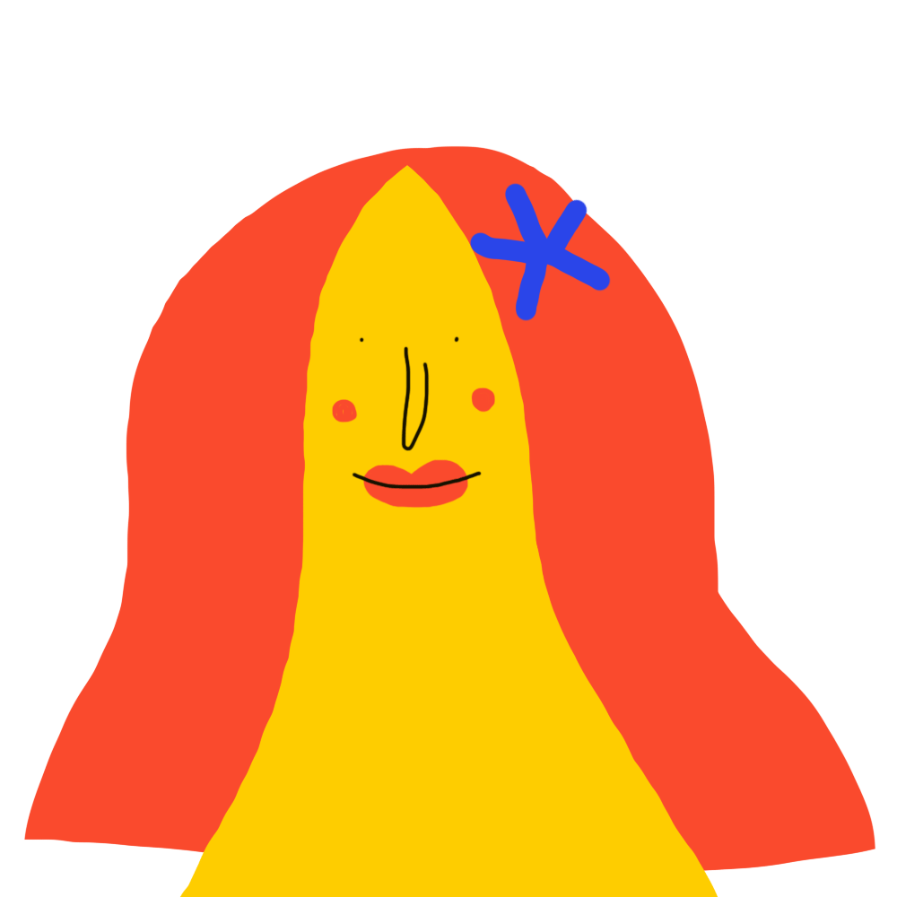

About
Welcome to the Feelings Project, where we celebrate the beauty and complexity of human emotions. Our mission is to create a space for exploration, understanding, and appreciation of the feelings that connect us all.
At Feelings Project, we aim to inspire mindfulness and compassion through stories, insights, and reflections on emotions. We believe in fostering deeper connections between people by understanding the shared experiences that make us human.
My Impression
Feeling is not only the deepest form of life, but also a kind of vibration that goes beyond our vision and touch. It is a pure experience that cannot be quantified, described, or fully understood - one can only go through it. Helen Keller's quote is a precious memory that I keep in mind always: "The best and most beautiful things in the world cannot be seen or even touched - they must be felt with the heart." So, I perceive feeling as an invisible beauty bridge, and it is a treasure that only the heart can discover - Bianca-Ecaterina Duca.
